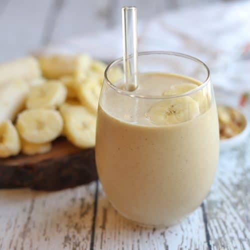

Vegan Peanut Butter Banana Shake

Description
This recipe makes a vegan (almost) healthy sweet treat.
It is an easy quick snack.
It has a customizable recipe so protein powder or different
fruit can be added.
Ingredients
- 1 (or 2) Frozen banana sliced up
- 1-3 cups almond milk (more or less for different consistency)
- 1-3 tablespoons creamy peanut butter
- 1 tablespoon cocoa powder (or substitue chocolate protein powder)
Steps
- Put frozen banana slices in blender
- Add some almond milk - small amount to start
- Blend bananans and almond milk
- Add peanut butter and cocoa powder and blend
- Add more almond milk for thinner consistency or more frozen banana slices to thicken, keep blending untill smooth
- Pour shake into glass and serve